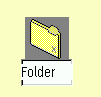

Standardm„áig wird XFolder, wenn der Ordner bereits ge”ffnet ist, den Titel des
neuen Objektes editierbar machen, als h„tten Sie bei gedr�ckter Alt-Taste darauf
geklickt:

Wenn Sie jedoch die Umschalt-Taste gedr�ckt halten, w„hrend Sie den Men�eintrag ausw„hlen, ”ffnet XFolder automatisch das Einstellungsnotizbuch des neuen Objekts nach dessen Erstellung.
Dieses Verhalten kann auf der Seite "Kontextmen�s" des neuen Objekts
"Workplace Shell" ge„ndert werden.